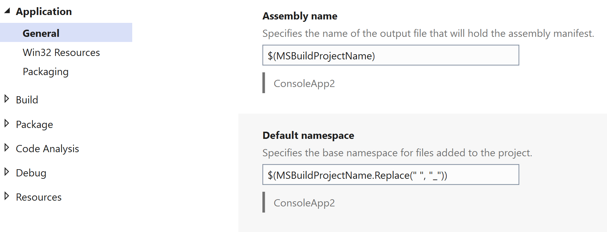
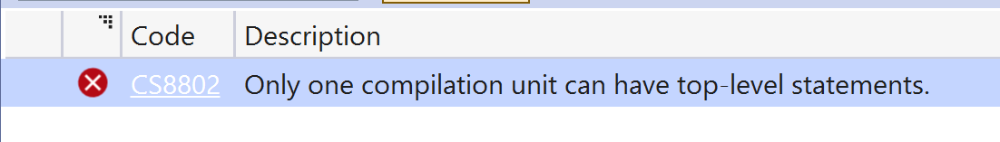

The first thing you notice in .net 6/ Visual Studio 2022 is what's missing.
Program.cs exists, but there's no namespace or class or public static void Main method.
// See https://aka.ms/new-console-template for more information
Console.WriteLine("Hello, World!");
Top level statements were introduced in .net 5/C#9 but they are used by default in the .net 6/C#10 Visual Studio 2022 templates.
You can put using statements above the code, and other methods (and other classes) below.
So what's going on? Let's use a bit of reflection.
var method = System.Reflection.MethodBase.GetCurrentMethod();
var type = method.DeclaringType;
Console.WriteLine($"Class={type.FullName} method={method.Name}");
This writes:
Class=Program method=<Main>$
Interestingly, the method name isn't Main, but a weird variation of it.
You can change the name of Program.cs (eg to Startup.cs, just to confuse the asp developers). But that program name is always Program
The other thing to note is there is no namespace. You're in the global:: namespace here (so are any classes you write below in the same file).
A project has a default namespace which matches the project name - it's in the project properties.
If you add a class, you add it in the default namespace. Which your top-level program.cs cannot see, because it is not in the project namespace, unless it adds a using statement.
You can't create another file with top-level statements - you get a CS8802 Only one compilation unit can have top-level statements error.
Top-level statements are really just a nice demo/teaching aid, but really we are still in the world of namespaces and classes. You can put back the project namespace, Program class and Main method, and it works like before. Having a different namespace to your classes is annoying. If this was a new project - "Console App (Educational)" I'd be more forgiving, but for mainstream projects, especially asp, top-level statements are a gimmick.
File scoped namespaces
When you add a class, you get the namespace wrapped around everything as before.
namespace ConsoleApp2
{
public class Class1
{
public void Execute()
{
}
}
}
In net 6 you can make the namespace file-scoped (no-one ever has more than one namespace in a file).
namespace ConsoleApp2;
public class Class1
{
public void Execute()
{
}
}
A minor cosmetic change, but the reduced indentation makes real code a bit more readable, and when you copy and paste methods, ifs and other things with {braces} it's just a little easier without that namespace closing brace at the end.
This is a compiler trick, so the C#10 compiler should, and does, generate older .net binaries. You can use file-scoped namespaces in framework 4.8, by changing the csproj file (although note other C#10 things are not backwards compatible, use with care).
<PropertyGroup>
<LangVersion>10</LangVersion>
</PropertyGroup>
The obvious next step is file-scoped classes, so only method contents are indented. Best practice is one class per file, and the braced version will always be available for legacy/generated code. I would rather see that than top-level statements.
Global usings
In net6, the compiler can automatically add some using statements, such as "using System;"
This is controlled by the implicit usings setting in csproj (old projects default to disable; new net6 projects are set to enable).
<Project Sdk="Microsoft.NET.Sdk">
<PropertyGroup>
<OutputType>Exe</OutputType>
<TargetFramework>net6.0</TargetFramework>
<ImplicitUsings>enable</ImplicitUsings>
<Nullable>enable</Nullable>
</PropertyGroup>
</Project>
This can cause conflicts, if a class name exists in multiple namespaces (which is why it is disabled when upgrading an existing project to net6).
Even if you turn off implicit usings, you can use global usings which are defined once (it is not an error to define them multiple times in different files).
The first syntax is in code (maybe in your program.cs):
global using System;
global using MyCompany.SuperUtilities;
You can also add it in the csproj.
<ItemGroup>
<Using Include="System.IO"/>
</ItemGroup>
In the obj folder you can see the compiler autogenerates a ConsoleApp1.GlobalUsings.g.cs file with the global usings from the csproj.
This is nice for keeping the using statements minimal. Sometimes your code will have common classes or extensions in nested namespaces that aren't very discoverable, but you can make them always available using global usings.